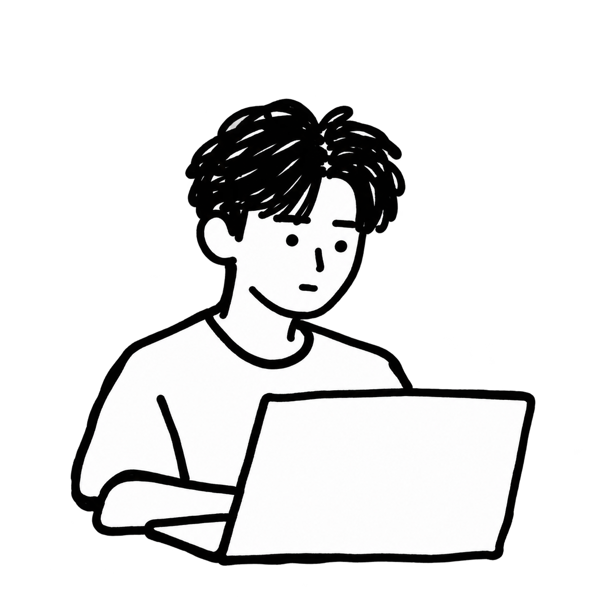

包庆涵 / Bao Qinghan你好，我是包庆涵，就读于交大机动学院能源动力（核工程）专业。我关注技术，也对人文、艺术和金融保持好奇，希望在不同领域的探索中，做出有趣且有用的东西。
专业之外
我不想把自己的探索局限在单一专业里。理解不同学科的思考方式，连接技术与日常生活，是我持续学习的动力。
屏幕内外
电影和主机游戏是我喜欢的叙事与体验方式。屏幕之外，我也喜欢拼积木、做手工和打羽毛球。
我的电影清单 · 我的游戏清单
想做的事
未来希望探索 AI 与硬件结合的创业方向，把脑海中的想法变成有趣、有用的产品。
看看我的作品 →